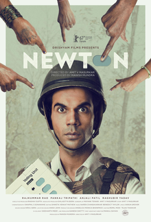

NEWTON STORY: Newton Kumar, a rookie government clerk, is sent on election duty in the conflict-ridden jungles of Chhattisgarh, which is under the control of the naxals. Despite the odds stacked against him, Newton Kumar tries his best to conduct a fair voting process in the region.
NEWTON REVIEW: In terms of entertainment value, 'Newton' takes on a completely unremarkable subject. After all, why would anyone want to watch a film on election woes in a remote jungle surrounded by Naxalites? Surely not your average moviegoer who is primarily accustomed to the glitz and glamour of escapistBollywood. But in the recent past, some films have tried to blur the line between sheer 'paisa vasool' quotient and essential social commentary. 'Newton' jumps over that divide and runs off with a brilliantly acted, impeccably written, lovingly shot, humorous, yet poignant film that Indian audiences didn't ask for, but need.
As a character Newton Kumar is so idealistic, he's ready to literally have his face rubbed in the dirt as long as he can fulfil his duty. His rigid demeanour is not tainted by the corruption and cynicism that we, as Indians, have come to embrace.Rajkummar Rao embodies this role with a blinking innocence in his eyes, hiding the intelligence of an actor who has a deep understanding of the persona he's playing. In fact, Newton's personality traits are so well defined by Rajkummar, that it would be really interesting to see this character react to a variety of other complex and uncomfortable situations. Along with him, Pankaj Tripathi, Anjali Patil and Raghubir Yadav put on a masterclass in acting - each one of them shines when they occupy the screen. Tripathi as Aatma Singh, in particular, is the perfect opposite of Newton's naivete, in his weary scepticism. Together, they make an odd couple of sorts, but also perfectly showcase the two ends of the spectrum in our thought process, when we contemplate the state of our 'democratic' country.
But their performances would ring hollow with the lack of a meaningful screenplay. Writer-director Amit Masurkar and Mayank Tewari have painfully captured the bittersweet essence of the people of an obscure jungle that's far-flung from civilization. This is also evident in the cinematography; each shot is thoughtfully structured and lovingly composed. Combined with a subtle sound design that's hard to miss - this film has everything going for it. 'Newton' has dared to take on an issue that our vast majority turns a blind eye to, and slaps us out of our blissful ignorance. Amidst laughing, it'll leave you thinking, which - and we need to be reminded of this - is what good cinema should do. Both your funny bone and your grey cells will thank you for watching it.